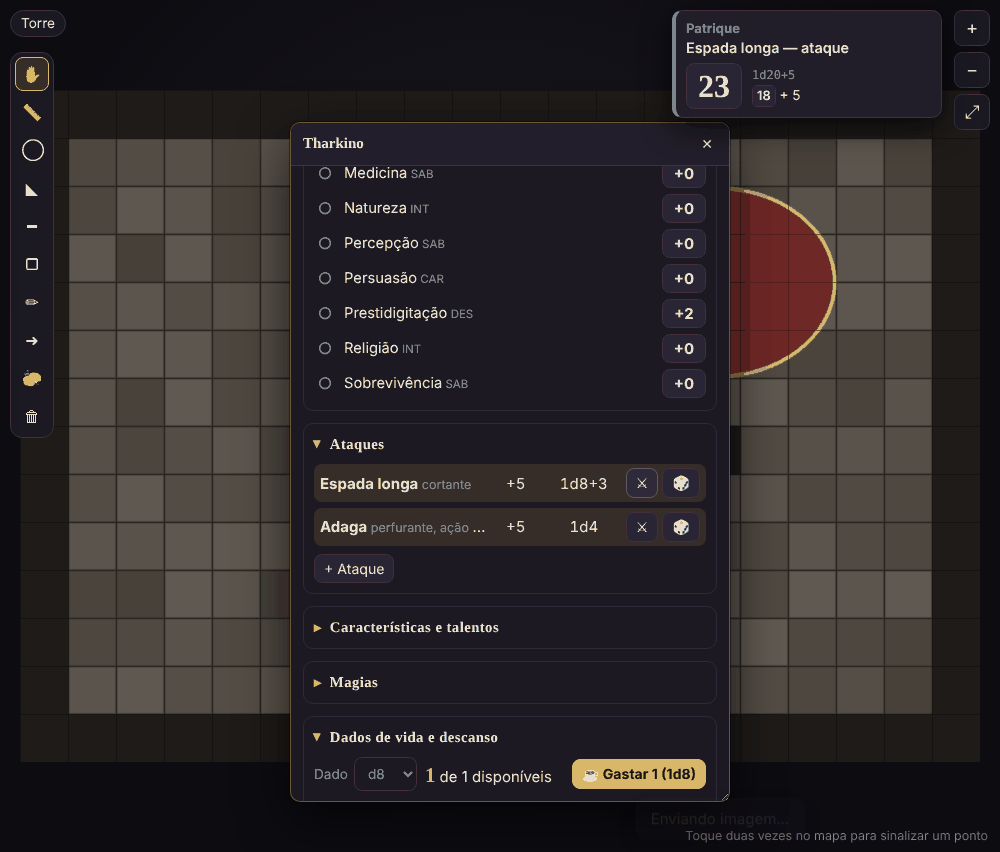
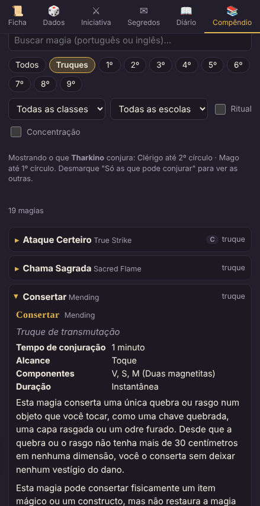
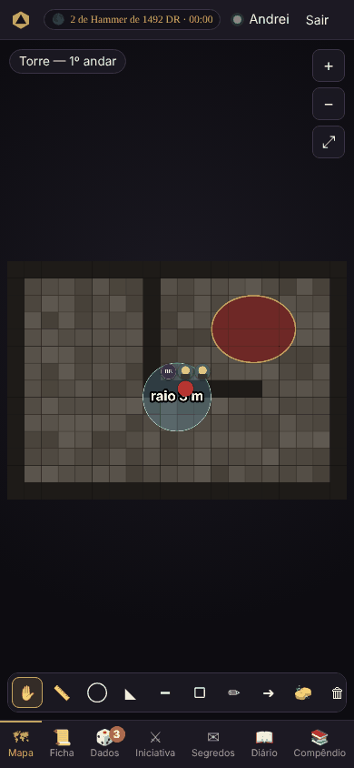
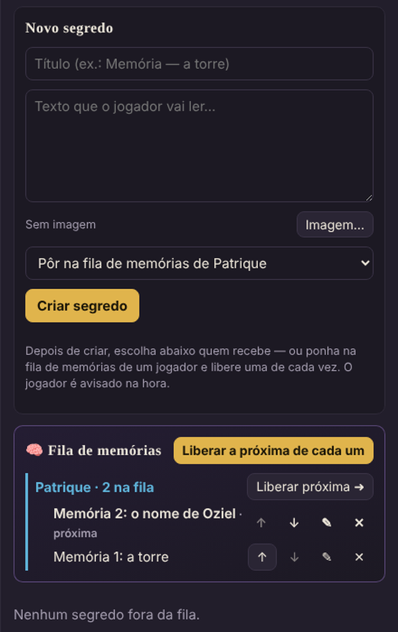

O que há neste livro
Cada parte da mesa tem um capítulo no manual, com o passo a passo no computador e no celular. O mestre vê tudo; cada jogador mexe só no próprio personagem.
- MapaI
Tokens com foto, PV e condições; zoom, arrasto e sinal no mapa.
- Vista 3DII
O mapa vira tabuleiro, com miniaturas .glb ou de papelão.
- Ferramentas do mapaIII
Régua em metros, áreas de magia, desenho, setas e névoa de guerra.
- FichaIV
Atributos, perícias, PV pela classe, multiclasse, espaços de magia e descansos.
- Equipamento e mochilaV
O boneco com os espaços do corpo; CA e ataques que se calculam sozinhos.
- DadosVI
Rolagens com vantagem, rolagens ocultas do mestre e o histórico no chat.
- IniciativaVII
A ordem do combate, as rodadas e o turno de cada um no mapa.
- Segredos e fila de memóriasVIII
Pistas e imagens para um jogador só, liberadas uma de cada vez.
- Diário e compêndioIX
As anotações do grupo e as páginas de consulta do mestre.
- Biblioteca: magias e itensX
As 319 magias e os itens do SRD em português, prontos para a ficha.
- Calendário e descansosXI
A data do mundo, descanso curto e longo para o grupo inteiro. Só o mestre.
- BestiárioXII
334 monstros do SRD, ajuste de ND e o medidor de dificuldade do encontro. Só o mestre.
- Painel do mestreXIII
Cenas, contas dos jogadores, backups e o fim da sessão. Só o mestre.
- Atalhos de tecladoXIV
O que dá para fazer sem tirar a mão do teclado.
Pranchas
Como a mesa aparece para quem joga. A primeira dá para mexer.




Crônica
A mesa cresce a cada sessão. As versões mais recentes:
- v5.6Vista 3D04/11/2026
- v5.5Biblioteca: magias e itens01/11/2026
- v5.4Multiclasse01/11/2026
- v5.3PV pela classe01/11/2026
Para começar
Só o mestre instala. Os jogadores precisam só do navegador.
- Instale o Node.jsA versão LTS, em nodejs.org.
- Baixe e descompacte a TábulaA pasta pode ficar em qualquer lugar.
- Rode o
instalar.batUma vez só. No Linux e no Mac,./instalar.sh. - Abra a mesa
iniciar.batpara jogar em casa,online.batpara jogar pela internet. - Mande o linkCrie as contas dos jogadores na aba Mestre e passe o endereço.
Para atualizar depois, feche a mesa e rode o atualizar.bat (ou ./atualizar.sh). A campanha fica guardada à parte.